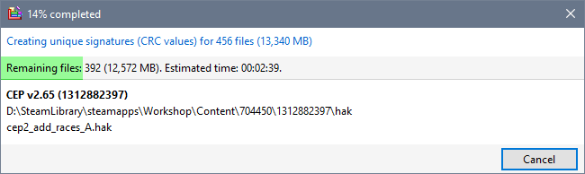
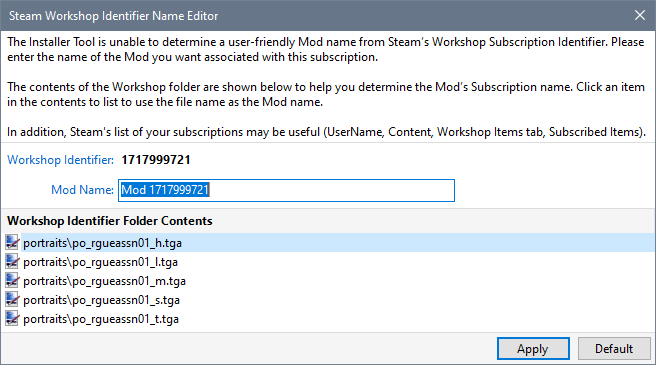
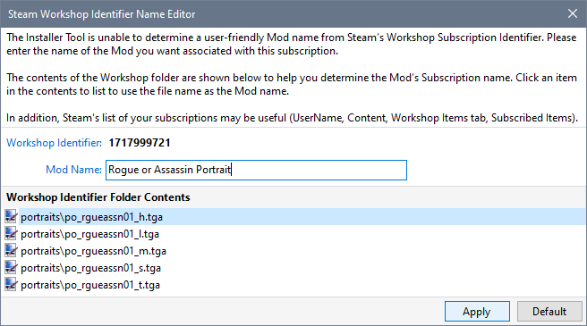
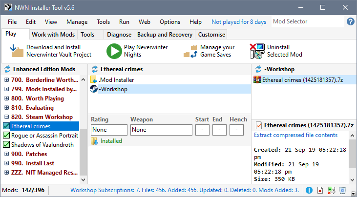

The Installer Tool detects new and changed Workshop Subscriptions when you...
- Start the Installer Tool.
- Click Save after enabling "Use NIT to manage Steam's Workshop Content" on the Preferences page in Advanced Settings.
- Select Refresh Workshop Files from the Tools Menu.
- Click Refresh in the Installer Tool's Steam Workshop Subscriptions viewer.
- Load or reload an Enhanced Edition Profile.
Detection Process
- Each time a new or changed subscription is detected, the Installer Tool calculates and records checksum values for all files in the Workshop item.

- If a user friendly Mod name cannot be derived for a new Subscription, you are asked to specify one or use the generated default name.

- Type the name of the subscription in the Mod Name box and click Apply.

- Workshop Mods that are not already defined are added to your Profile's Mod list and installed. For updated Mods, the Workshop archive files are updated, Mod Installers re-created and, if necessary, re-installed.

Related Topics
Enable Steam Workshop Subscription Management
Detect Steam Workshop Subscriptions
Manage Workshop Mods
Disable Steam Workshop Subscription Management